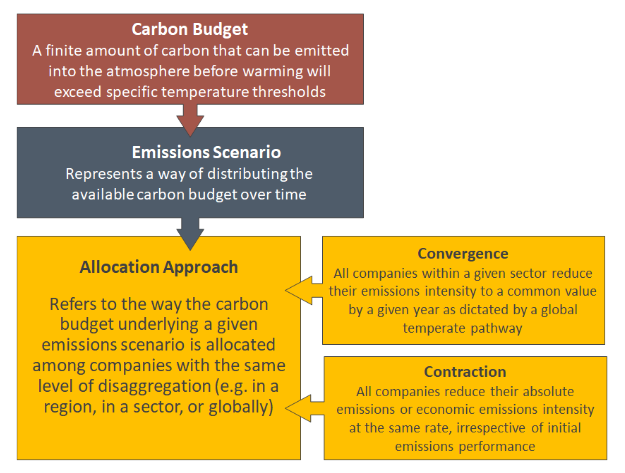
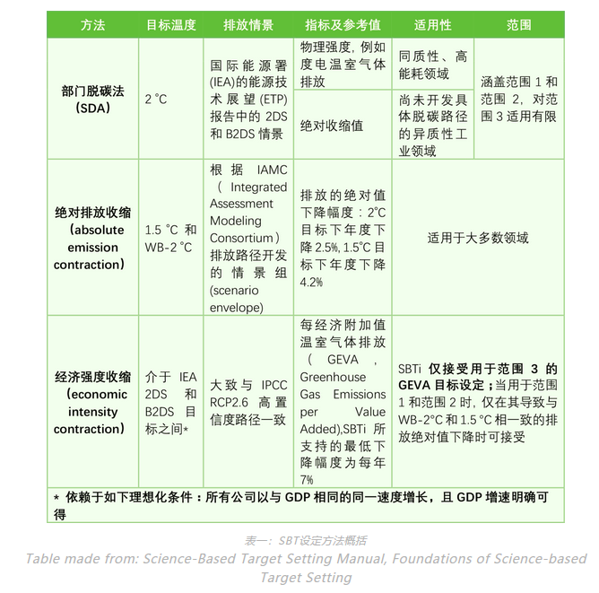

# ESG 披露指南
在中文语境里，香港交易所的ESG指引由于借鉴了GRI、TCFD，加上简便易懂，其实用性强，非常适用于广大中国公司。而且，由于近几年的发展，香港交易所的对于ESG报告的如何披露也有非常详尽的描述。
主要参阅香港交易所《如何编备环境、社会及管治报告 (opens new window)》（中文版）
# 投资者对于ESG的期待
ESG报告有助于投资者理解公司业绩表现。投资者希望不断看到公司战略、发展目标、执行过程、重大风险、关键表现和进步等信息
Sullivan Rory. Valuing corporate Responsibility. How do investors really use corporate responsibility information?，2011
# 投资者对ESG数据的期待
- 数据可比性和标准化：公司应采用标准化的指标，并以现存国际及地区性的框架为指导。与香港上市规则要求（ESG指引）内所列数据可比这一点被特别提及；
- 清晰的披露范围和透明的方法论：披露框架中所有指标均可用，并与现行方法论相符，以确保方法论的时间一致性；
- 数据的时间稳定性：使用相同的范围和方法论建立连续的时间序列数据，使投资者可对公司历史数据进行对比；
- 与现存ESG数据整合：包括与证券交易所现行要求相符；
- 数据的可得性：分析师应能够获取所有公开数据，以及原始形式的数据，包括在现存渠道中已经披露的数据，例如政府数据库中的数据；
- 战略方式：实质性ESG指标需在公司战略中有所体现，公司需理解监测并通报这些ESG数据的原因，ESG数据需在公司业绩表现的背景中得到解释。投资者希望避免公司仅以完成任务或服从合规的心态进行此项工作；
- 高层管理者监督：除委派专人管理ESG信息披露相关事务之外，高层管理者应对报告负责，以确保报告的质量，保证公司对ESG议题及其如何影响公司战略有良好的理解（包括数据分析、量化指标的解释，及与行业平均水平和历史业绩进行对比）；
- 强有力的执行： 对错报、漏报考虑采取惩罚措施；
- 根据基本的认证标准进行核实。
# 第一步 治理架构
董事会的角色
环境、社会及管治议题的重要性不下於其他类型企业风险，董事会有责任加以监督。环境、社会及管治议题对公司赚取回报的能力可以有重大的影响，董事会务必评估其对公司整体策略的潜在影响。董事会对发行人的环境、社会及管治承担整体责任：
评估及厘定发行人的环境、社会及管治相关风险及机遇；
确保设有适当和有效的环境、社会及管治风险管理及内部监控系统；
制订发行人的环境、社会及管治管理方针、策略、优次及目标；
就环境、社会及管治相关目标定期检讨发行人的表现；及
审批发行人环境、社会及管治报告内的披露资料。
# 第二步 了解监管要求
对于贵公司所在的交易所，在ESG披露上有何要求？如果没有，要遵循什么样的标准？是强制性还是半强制性等等。
# 如果有要求
找出资料缺漏
工作小组应就每一项披露规定辨识相关数据来源，或制定日後收集有关数据的程序。
政策方面，要先问一问：
我们在这方面是否已有任何政策？若不，是否要制定有关政策？
公司内谁负责厘定这些政策及监督其实施？
关键绩效指标方面，要问一问：
我们要就这个关键绩效指标汇报甚麽资料或数据？
数据是否有任何缺漏？如有，如何取得所需数据？
# 如果没有要求
建议使用GRI Standards 作为披露框架。步骤同上。
# 第三步 汇报范围
即环境、社会及管治报告的范围，公司应按本身业务及情况设定厘定范围的准则。
可用不同方法去决定应该包括什么在环境、社会及管治报告内。
部分公司可能倾向采纳用于年报的范围，部分则可能使用财务门槛（例如包括占发行人集团总收入某个百分比或以上的附属公司或业务）或风险水平（例如包括一些非发行人集团主要业务但超出某个风险水平的业务）。
在某些情况下，公司可就不同「层面」/条文规定而采纳不同范围。
# 第四步 重要性评估
「重要性」是编撰高质量环境、社会及管治报告的关键汇报原则之一。
重要性是指当董事会认为有关环境、社会及管治事宜会对投资者及其他利益相关方产生重要影响时，公司就应作出披露。
国际标准/指引（例如GRI准则及TCFD的建议）涵盖了许多环境及社会事宜，但并非全都与所有公司相关。公司可因应其行业、业务所在地点及其他因素而认定某些「层面」为重要、某些「层面」则为不重要。公司必须确定对其业务而言哪些属重要的「层面」，再按此编排其环境、社会及管治报告内相关内容的轻重先后。
这一步可使用利益相关方调查进行议题的重要性评估。
# 第五步 收集资料
在进行重要性评估之后，公司应将一系列的重要性高度议题列出，并：
- 针对性地列出访谈提纲
- 针对性地对涉及的部门进行访谈
- 访谈后对信息进行收集
# 第六步 订立目标
根据「量化」原则（让ESG信息可量化），公司应订立目标（可以是数字或方向性声明）协助减低负面影响及评估/验证环境、社会及管治政策及管理系统的成效。
# 如何订立环境、社会及管治目标
订立目标其中一个广为接纳的方法为使用「S.M.A.R.T.」，这个概念旨在确保目标都清晰和可达到。发行人订立S.M.A.R.T.目标时应考虑下列问题：
具体性(Specific) ：具体而言公司希望达到什么目标？
可计量性(Measurable)：公司如何知道已经达到目标？
可行性(Attainable)： 目标是否公司自己能控制、实际上亦做得到的事？
相关性(Relevant)： 目标如何适用于公司的业务，又是否符合现有策略？
时限(Time bound)： 公司希望在何时之前达到目标？
# 方向性声明的讨论
目标可以是实际数字或方向性、前瞻性的声明。视乎公司的特定情况，其环境、社会及管治目标亦可是数字与方向性声明两者的混合。方向性声明可能适用於发行人推出新措施，但尚不确定有何可行方向及/或没有往绩作基准的情况。
按「量化」原则，若公司过往曾汇报过方向性的目标，可逐渐转为收集和披露实际数字，以评估其就该目标而言的表现。其後若获得相关量化资料，公司亦可相应修改目标。
# 第七步 撰写ESG报告
环境、社会及管治报告须包括：
- 陈述公司在环境、社会及管治事宜方面的管治情况；
- 阐释汇报范围及陈述订定汇报范围的过程；
- 陈述公司如何应用若干汇报原则（「重要性」、「量化」及「一致性」）；
- 就每项「不遵守就解释」条文作出汇报；（主要针对强制性披露的条款）
- 独立验证(如适用)；及
- 公司拟向投资者及其他利益相关方传达的主要信息（对未来的展望等）。
# 如何制定碳排放目标
Science-based targets (opens new window) 为公司提供了一个 Science-Based Target Setting Manual (opens new window) （以科学为基础的碳排放目标制定手册）。
Overview of Available Target-Setting Methods
There are three available target-setting methods: absolute emissions contraction, the Sectoral Decarbonization Approach, and economic intensity contraction. In general, an SBT method comprises three components:
- A carbon budget; （预算）
- an emissions scenario; and 排放情景，以及
- an allocation approach (convergence or contraction). 分配方法

# 制定的方法：
有三种受SBTi认可的公司碳目标设定方法：
- 行业脱碳方法(Sectoral Decarbonization Approach ,SDA)（对同质性部门使用趋同convergence方法），
- **绝对排放收缩（absolute emission contraction）**和
- 经济强度（economic intensity contraction）收缩
- 行业脱碳方法: SDA 目标以排放/特定商业指标（例如生产每吨产品的吨二氧化碳当量）的形式提出。这一方法基于如下假设：到2050年，在同一个同质部门内，所有生产者的排放强度（physical emission intensity）将趋同至同一数值。不同公司根据其基准年排放强度和他们在行业活动中所占的比重来划分各自的责任，因此对于市场份额不断增长的公司，SDA要求更快速的排放强度减排路径，以免导致行业碳预算超标。
- 绝对排放收缩：绝对收缩方法要求公司将其减排目标设定为与1.5°C或WB-2°C（Well Below 2℃）目标要求相一致减排速度（目标年温室气体减排量/基准年温室气体排放量）。
- 经济强度收缩：这种方法的减排目标以温室气体排放/企业附加值（GEVA，Greenhouse Gas Emissions per Value Added）作为衡量，要求企业每年将GEVA减少7%。经济强度的单位为吨二氧化碳排放当量/$附加值。
Absolute Emission Contraction
Absolute Emissions Contraction is a method for setting absolute targets that uses contraction of absolute emissions. Through this approach, all companies reduce their absolute emissions at the same rate, irrespective of initial emissions performance. Consequently, an absolute emissions reduction target is defined in terms of an overall reduction in the amount of GHGs emitted to the atmosphere by the target year, relative to the base year (e.g. reduce annual CO2e emissions 35% by 2025, from 2018 levels).
The minimum reduction required for targets in line with well-below 2°C scenarios is 2.5% in annual linear terms. Companies, particularly those in developed countries, are strongly encouraged to adopt targets with a 4.2% annual linear reduction to be aligned with limiting warming to 1.5°C.
This method is a simple, straightforward approach to set and track progress toward targets that is applicable to most sectors. Table 3-1 specifies which sectors should not use the approach.
| Method | Company Input | Method Output |
|---|---|---|
| Absolute emissions contraction | ● Base year ● Target year ● Base year emissions, disaggregated by scope | Overall reduction in the amount of absolute GHGs emitted to the atmosphere by the target year, relative to the base year |
Example of absolute targets set:
- Cisco commits to reduce absolute scope 1 and 2 GHG emissions 60% by FY2022 from a FY2007 base-year.
- Global food and beverage company Nestlé commits to reduce absolute scope 1 and 2 GHG emissions by 12% between 2014 and 2020.
Sectoral Decarbonization Approach (SDA)
The SDA is a method for setting physical intensity targets that uses convergence of emissions intensity. An intensity target is defined by a reduction in emissions relative to a specific business metric, such as production output of the company (e.g., tonne CO2e per tonne product produced). The SDA assumes global convergence of key sectors’ emissions intensity by 2060. For example, the emissions intensity of steel production in China, the U.S., and Brazil is assumed to reach the same level by 2060, regardless of its current diversity.15 Regional pathways have not been incorporated into this method.
The SDA uses the B2DS scenario from the International Energy Agency (IEA) report “Energy Technology Perspectives (ETP) 2017,” which comprises emissions and activity projections used to compute sectoral pathways aligned with limiting warming to well-below 2°C (IEA, 2017). Due to the lack of 1.5°C scenario data from IEA, SBTi currently does not provide an SDA option for 1.5°C targets.
Currently, the SDA method provides sector-specific pathways for the following homogenous and energyintensive sectors
Available in the Science-Based Target Setting Tool:
Power Generation
Iron & Steel
Aluminum
Cement
Pulp & Paper
Services/commercial buildings
Available in the SDA Transport Tool (opens new window):
Passenger and Freight Transport
Targeted emissions intensity varies by company base year emissions intensity, projected activity growth, and sectoral budgets. Companies can use the relevant SDA pathways to calculate intensity in the target year. The SDA method covers scopes 1 and 2. It has limited applicability to other scope 3 categories .
A previous target setting tool specific to SDA calculated SBTs for a general “Other Industry” category that covers sectors other than the ones listed above, including construction industry and manufacturing sectors (e.g., food and beverage, electronics, machinery). Please note that the “Other Industry” pathway has been disabled in the new Science-Based Target Setting Tool. Companies in these sectors should use the absolute emissions contraction approach to set targets (please see section “Other Target formulations” below for more guidance).
| Method | Company Input | Method Output |
|---|---|---|
| Sectoral Decarbonization Approach (SDA) | ● Base year ● Target year ● Base year emissions, disaggregated by scope ● Activity level in the base year (e.g., building floor area, distance travelled, etc.) ● Projected change in activity by target year | A reduction in emissions relative to a specific production output of the company (e.g., tonne CO2e per MWh) |
Example of physical intensity targets set using SDA:
- Italian multinational manufacturer and distributor of electricity and gas Enel commits to reduce CO2 emissions 25% per kWh by 2020, from a 2007 base year.
- European real estate operator Covivio commits to reduce scope 1 and 2 GHG emissions 35% per sqm by 2030 from a 2017 base-year.
Economic Intensity Contraction Greenhouse Gas Emissions per Value Added (GEVA) is a method for setting economic intensity targets using the contraction of economic intensity. Targets set using the GEVA method are formulated by an intensity reduction of tCO2e/$ value added. Under the GEVA method, companies are required to reduce their GEVA by 7% per year (compounded). The 7% year-on-year reduction rate is based on an absolute emissions reduction of about 75% by 2050 from 2010 levels. Based on recent economic projections and estimates of historic emissions, the 7% rate is broadly compatible with high-confidence IPCC (RCP2.6) pathways, and its ambition is intermediate between the IEA 2DS and B2DS pathways, under idealized conditions that are expounded below (ETP, 2017; SBTi, 2019)
Unlike the Absolute Contraction and SDA methods, GEVA only maintains a global emissions budget to the extent that the growth in value added of individual companies is equal to or smaller than the underlying economic projection. The differentiated growth of companies and sectors is not balanced by GEVA (and other economic intensity target-setting methods); thus, the currently accepted GEVA value depends on idealized conditions where all companies are growing at the same rate, equal to that of GDP, and GDP growth is precisely known. For these reasons, and due to the volatility of economic metrics, economic intensity target-setting methods are considered less robust than absolute and physical intensity methods.
Important Note: per SBTi criteria, scope 1 and 2 targets using GEVA are only acceptable when they lead to a reduction in absolute emissions in line with well-below 2°C and 1.5 °C scenarios. GEVA is therefore more applicable for scope 3 target-setting (please see Chapter 8 for detailed guidance on scope 3 target setting).
| Method | Company Input | Method Output |
|---|---|---|
| GHG Emissions per Value Added | ● Base year ● Target year ● Base year emissions, disaggregated by scope ● Value added in the base year ● Projected change in value added by target year | A reduction in emissions relative to financial performance of the company (e.g., tonne CO2e per value added). |
Example of economic intensity target set using GEVA:
- Manufacturer of outdoor power products Husqvarna Group AB commits to reduce scope 1 and scope 2 emissions 30% per unit of value added by 2020 from a 2015 base-year.
Other Target Formulations
Depending on reporting and communication preferences, a company can choose to use the target format output by a method and/or translate it to other formats (e.g., use production data to convert an absolute target into an intensity target). Companies can choose to use an economic or physical metric most representative of the companies’ profiles to formulate targets. For instance, companies in sectors where sector-specific pathways are not yet available can set an intensity target based on its main product output. With such target formulation, companies need to ensure that the absolute emissions reduction is in line with the absolute contraction approach.
Example of targets using other formulations set:
- Global Brewer AB InBev commits to reduce emissions across the value chain (scopes 1, 2 and 3) by 25% per beverage by 2025, from a 2017 base year.
总结
